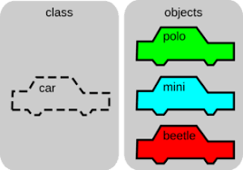
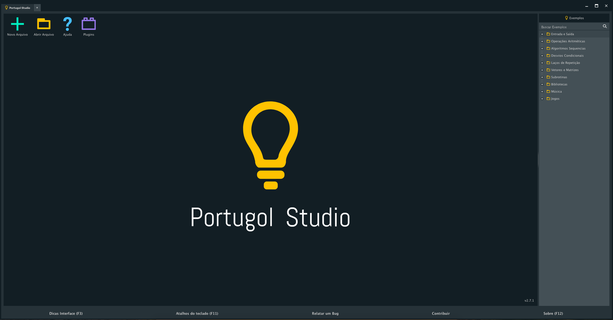
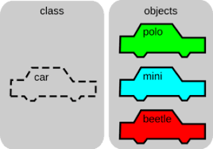
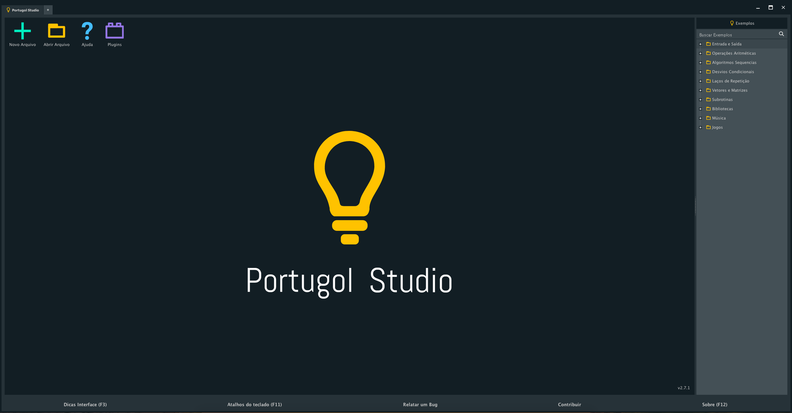
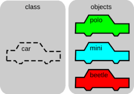
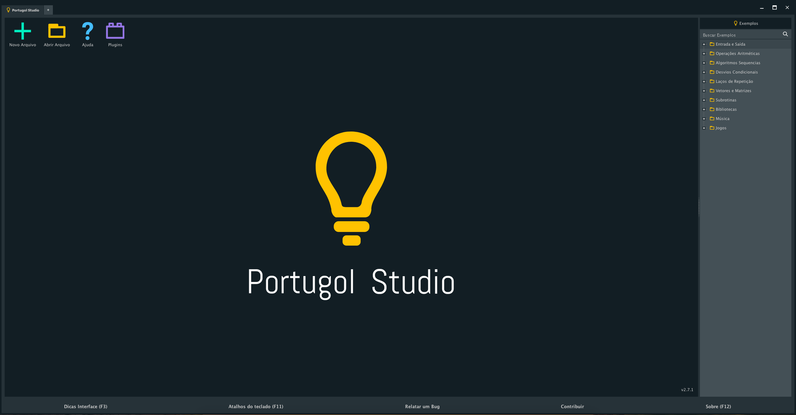

Fundamento de Programação Orientada a Objeto


Mas, oque é FPOO?
Hoje, a maioria das linguagens de programação são orientadas a objetos como Java, C#, Python e C++ e, apesar de terem algumas diferenças na implementação, todas seguem os mesmos princípios e conceitos. Muitos programadores, apesar de utilizarem linguagens orientadas a objetos, não sabem utilizar alguns dos principais conceitos desse paradigma orientado a objetos e, por isso, desenvolvem sistemas com alguns erros conceituais e acabam escrevendo mais código que o necessário, não conseguindo reutilizar o código como seria possível.
No nosso curso demos inicio aprendendo sobre Algoritmos, onde temos 3 tipos:
| Descrição Narrativa | Fluxograma | Pseudocódigo |
|---|---|---|
| É utilizada quando queremos descrever um algoritmo de forma que o receptor da informação entenda o assunto | É um tipo de diagrama e pode ser entendido como uma representação esquematica de um processo | Consiste em analisar o enunciado do problema, utilizando regras predefinidas, os passos a serem seguidos para a resolução do problema |
| O passo a passo para trocar o pneu de um carro é um exemplo de descrição narrativa | O fluxograma é desenvolvido atravez de formas geometricas, onde cada uma indica uma ação | O programa "Portugol" é um exempo de pseudocódigo |
Outros assunto extremamente importantes nessa matéria foram:
Algumas atividades desenvolvidas no primeiro semestre: